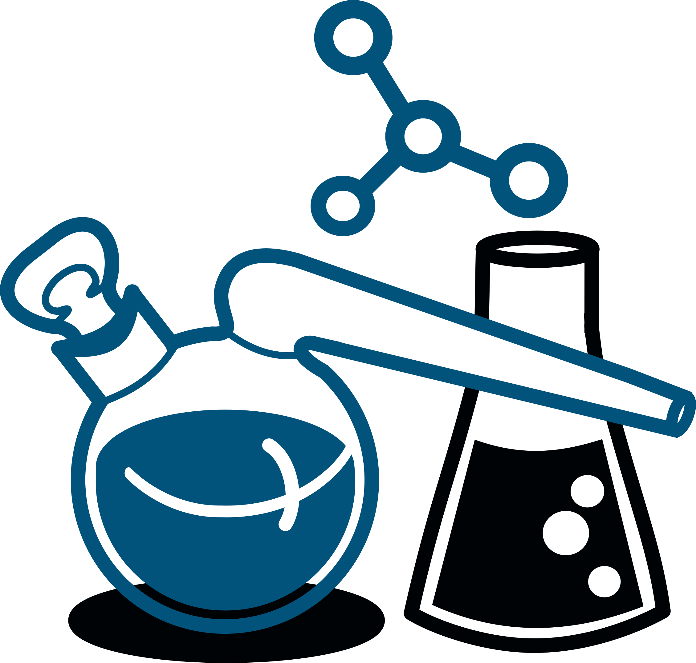
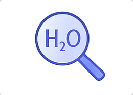
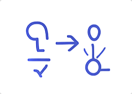

Pomagam licealistom osiągać ambitne cele – od wysokich wyników na maturze rozszerzonej z chemii po sukcesy w Olimpiadzie Chemicznej. Korzystam z autorskich materiałów i metod rozwijanych przez lata pracy z uczniami.
Wierzę, że skuteczna nauka chemii opiera się przede wszystkim na zrozumieniu, a nie na pamięciowym opanowywaniu schematów. Dlatego podczas zajęć tłumaczę nawet najbardziej wymagające zagadnienia w prosty i logiczny sposób, dostosowując tempo oraz metody pracy do potrzeb każdego ucznia.
Kompleksowe przygotowanie do matury z chemii – od uporządkowania teorii po rozwiązywanie wymagających zadań maturalnych.

Zaawansowane przygotowanie do wszystkich etapów Olimpiady Chemicznej z wykorzystaniem autorskich materiałów i zadań.
Zajęcia 1:1 dopasowane do Twoich potrzeb – nadrabianie zaległości, przygotowanie do sprawdzianów, matury lub olimpiady.
Ponad 1000 stron opracowań, rozbudowane zestawy zadań oraz materiały tworzone na podstawie wieloletniej pracy z uczniami.
Kompleksowe opracowania zagadnień wymaganych na maturze rozszerzonej z chemii – teoria, najważniejsze zależności, wzory oraz zadania z rozwiązaniami.

Zaawansowane materiały przygotowujące do Olimpiady Chemicznej – trudniejsze zagadnienia, metody rozwiązywania zadań oraz analiza problemów olimpijskich.
Unikalne zestawy zadań tworzone na podstawie wieloletniej pracy z uczniami. Materiały obejmują ponad 1000 stron opracowań i pomagają trenować konkretne umiejętności.
Każde zajęcia prowadzę z energią i zaangażowaniem, które udzielają się uczniom.
Dostosowuję metody do potrzeb każdego ucznia – nie ma jednej drogi do sukcesu.
Moi uczniowie zdobywają świetne wyniki na maturze i osiągają sukcesy w olimpiadach.
Korzystam z technologii i AI, aby uczynić naukę bardziej efektywną i angażującą.
Tłumaczę nawet najtrudniejsze zagadnienia w prosty i zrozumiały sposób.
Jestem dostępny również poza zajęciami – zawsze możesz liczyć na pomoc.
Zajęcia online pozwalają skutecznie przygotowywać się do matury i Olimpiady Chemicznej niezależnie od miejsca zamieszkania. Pracujemy w wygodnej formie, zachowując pełną interakcję, możliwość zadawania pytań oraz dostęp do autorskich materiałów.